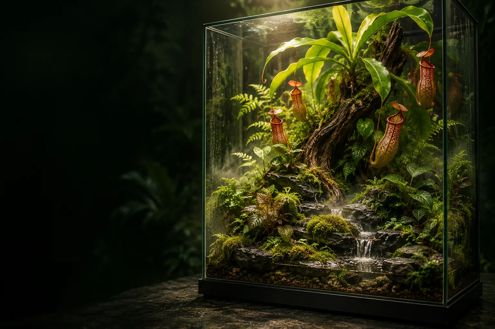

01PRÁVĚ TEĎ
Živý základ
Sestavit prostředí. Ručně pečovat, zaznamenávat odečty a pozorovat reakce rostliny.
ČLOVĚK ŘÍDÍ. SYSTÉM SE RODÍ.
PŘÍRODA × ZVÍDAVOST × TECHNOLOGIE
Učíme se rozumět živému světu.
A tvoříme technologii, která se o něj jednou dokáže postarat.
Co kdyby malý kousek přírody dokázal vyprávět, co potřebuje?
Sirona vzniká na pomezí biologie a techniky. Začíná skutečným teráriem a jednoduchou otázkou: co se v něm děje a proč? Naším cílem jsou mikrobiotopy, které umíme pozorovat, pochopit a postupně jim svěřit část vlastní péče.
Nejdřív se učíme my. Potom systém. Od ručních záznamů přes měření k digitálnímu dvojčeti a ověřenému řízení. Autonomie je směr, ke kterému rosteme.
Jak se k tomu dostanemeNejvětší objev může začít
v tom nejmenším světě.
Sklo odděluje dva světy.
Zvídavost je spojuje.
První pilot vzniká kolem láčkovky označené Nepenthes ‘Gaya’. V návrhu ji usazujeme do vzdušné dutiny dřeva, s volným prostorem pro láčky a odtokem přebytečné vody.
Terárium · láčkovku · 6W LED
mlžič · teploměr a vlhkoměr
Břidlicovou skalku, dřevo a mech.
Přirozený vzhled, přístupná údržba.
První terárium pro syna.
Pozorovat, rozhodnout, pochopit.
Chceme se ho naučit číst.
Tera je živý fyzický svět. Aqua je navrhovaná vrstva jeho měření, přehledu a řízení. Propojí senzory s historií prostředí a ukáže, jak biotop reaguje na světlo, mlžení nebo proudění vzduchu.
Jednou z veličin je VPD: rozdíl mezi tlakem nasycené vodní páry a jejím skutečným tlakem. Spojuje teplotu a vlhkost do jednoho pohledu na vysušující působení vzduchu.
Plánovaná páteř: ESP32 + čidla → MQTT → přehled a historie. Fyzické propojení prvního pilotu zatím není ověřené.
Posuňte teplotu nebo vlhkost a sledujte vypočtené VPD.
Při vyšší vlhkosti VPD klesá. Při stejné vlhkosti a vyšší teplotě roste.
Pouze výukový výpočet. Bez připojeného čidla a bez ovládání zařízení. VPD vzduchu není měření listu ani doporučený pěstební rozsah.
Každá další schopnost
vyrůstá ze skutečné zkušenosti.
Sestavit prostředí. Ručně pečovat, zaznamenávat odečty a pozorovat reakce rostliny.
ČLOVĚK ŘÍDÍ. SYSTÉM SE RODÍ.Ověřit senzory, sbírat časové řady a propojit teplotu, vlhkost a VPD s denním rytmem.
PROSTŘEDÍ ZÍSKÁVÁ HISTORII.Porovnávat skutečný vývoj s modelem. Nejprve zkoušet doporučení, potom vyhodnotit jejich účinek.
MODEL SE UČÍ Z REALITY.Ověřené řízení světla, mlžení a ventilace. Detekce chyb, dohled člověka a více propojených biotopů.
TECHNOLOGIE PEČUJE.ZA HRANICÍ JEDNOHO SKLA
Terárium je první krok. Dlouhodobou vizí je modulární rodina živých systémů — od terárií přes vodní biotopy po pěstitelské experimenty. Se společnou řečí dat, vyměnitelnými uzly a schopností učit se z každého dalšího prostředí.
Výzkumný směr Sirony. Rozšíření se bude odvíjet od zkušeností prvního pilotu.
TVŮRČÍ DIALOG ZAČÍNÁ OTÁZKOU
Stavíme, pozorujeme a sdílíme cestu. Pěstujete láčkovky, tvoříte vlastní biotop nebo propojujete přírodu s elektronikou? Pojďme si vyměnit zkušenosti.
ANTONÍN DOSPIVA × SIRONA